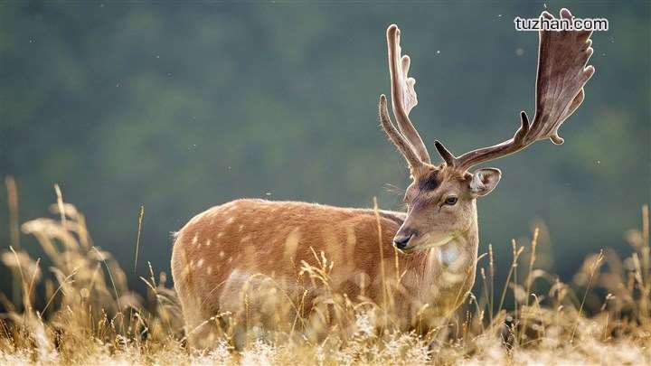

麋鹿
外形特征
麋鹿是一种大型食草动物，体长170-217厘米，尾长60-75厘米。 雄性肩高122-137厘米，雌性70-75米厘米，体形比雄性略小。一般麋鹿体重120-180千克，成年雄麋鹿体重可达250千克，初生仔12千克左右。角较长，每年12月份脱角一次。雌麋鹿没有角，体型也较小。雄性角多叉似鹿、颈长似骆驼、尾端有黑毛，麋鹿角形状特殊，没有眉杈，角干在角基上方分为前后两枝，前枝向上延伸，然后再分为前后两枝，每小枝上再长出一些小杈，后枝平直向后伸展，末端有时也长出一些小杈，最长的角可达80厘米；倒置时能够三足鼎立，是在鹿科动物中独一无二的。麋鹿颈和背比较粗壮，四肢粗大。主蹄宽大能分开，多肉，趾间有皮健膜，有很发达的悬蹄，行走时带有响亮的磕碰声；侧蹄发达，适宜在沼泽地中行走。夏毛红棕色，冬季脱毛后为棕黄色；初生幼仔毛色橘红，并有白斑。尾巴长用来驱赶蚊蝇以适应沼泽环境。
栖息环境
从麋鹿宽大的蹄及蹄间有皮腱膜分析，适于在沼泽地活动；长而多毛的尾，利于驱赶飞扰的昆虫；从饲养麋鹿喜泡水和泥浴的习性判断，它们过去生活于温暖潮湿泽地。喜平原、沼泽和水域，长江三角洲平原湿地显然是它栖息的理想生境。

生活习性
麋鹿是鹿类动物中较温顺的一种。据人工多年的饲养、观察，麋鹿的奔跑速度不及梅花鹿和狍，发情期的公鹿也不像梅花鹿、马鹿、白唇鹿那样攻击人，而且占群公鹿见到人接近即逃跑。在哺乳期，人给幼仔打耳号、测量时，幼仔的叫声只能吸引母鹿在远处观望，而不像其他鹿那样，母鹿为了保护幼仔而攻击人。雄性麋鹿之间为争夺配偶的角斗也相对温和，没有激烈的冲撞和大范围的移动，角斗的时间一般不超过10分钟，失败者只是掉头走开，胜利者不再追斗，很少发生鹿之间的伤残现象。公鹿占群后，其他公鹿窥视母鹿时、占群公鹿仅用吼叫和追逐等方式赶走对方。以上这些特点决定了它们逃避敌害的能力差，较易被天敌和人类捕杀。 麋鹿性好合群，善游泳，主要以禾本科、苔类及其它多种嫩草和树叶为食。人工饲养其饲料种类由三部分组成： “细粮”包括小麦麸、大麦、玉米、豆饼；大豆秸秆纤维化程度较高是“粗粮”。将“细粮”、“粗粮”分别粉碎，并按照一定的比例混合加水搅拌、发酵，与此同时，还用鲜嫩、可口的胡萝卜、麦青等“水果蔬菜”来补充维生素。
分布范围
原产地：中国。
麋鹿原产于中国长江中下游沼泽地带，在10000年-3000年以前相当繁盛，以长江中下游为中心分布西从山西省北到黑龙江省，在朝鲜和日本也发现过麋鹿化石。后来由于自然气候变化和人类的猎杀，在汉朝末年就近乎绝种，元朝时，蒙古士兵将残余的麋鹿捕捉运到北方以供游猎。在自然界已经灭绝。到19世纪时，只剩下在北京南海子皇家猎苑内一群，约200-300头。1866年，被法国传教士大卫神甫发现并命名拉丁种名，各国公使用贿赂、偷盗等手段，为自己国家动物园搞到几只。1894年永定河泛滥，冲毁皇家猎苑围墙，残存的麋鹿逃出，被饥民和后来的八国联军猎杀抢劫，从此在中国消失。
野生的麋鹿虽然绝灭了，但是通过放养，最终在中国重新建立了麋鹿的自然种群。1986年8月从英国乌邦寺迎归了20头年轻的麋鹿，放养在清代曾豢养廉鹿的南海子，并建立了一个麋鹿生态研究中心及麋鹿苑；1987年8月，英国伦敦动物园又无偿提供了39头麋鹿，放养在大丰麋鹿保护区至2017年，这两处的麋鹿都生长良好，并且繁殖了后代。
群种现状
麋鹿是一种仅限于第四纪中后期的动物，从已知的190多个麋鹿化石出土地点确认，历史上麋鹿的分布区西至山西的汾河流域，北至辽宁的康平，南到浙江余姚，东到沿海平原及岛屿。到了晚更新世，麋鹿种群迅速发展，到全更新世中期达到鼎盛，但商周以后麋鹿迅速衰落。原始人类由于人口密度低、生产力水平低，不构成对麋鹿的威胁。而商周以后，由于自然变迁、麋鹿自身的原因和人为干扰等因素，造成了麋鹿的不断减少。
从自然因素看，由于麋鹿是一种喜爱温暖湿润的动物，而中国近5千年来的气温是在逐渐变冷，沼泽和水域也明显减少，自然环境的变化对麋鹿有较大的影响。从自身因素看，麋鹿主要采食水生和陆生的禾本科及豆科植物，食性狭窄也是麋鹿生存受到威胁的自身因素。

人口增长和农业的发展，侵占了麋鹿的生活地域。人类的捕杀，严重影响了麋鹿的生存。考古学发现，1万年至4千年前人类遗址中出土的麋鹿骨骼的数量，与家猪骨骼的数量相当。可见当时麋鹿是被人类当作食物而遭到大量猎杀的。甲古文中记载，古代一次猎获麋鹿的数量达348只。另外麋鹿还被制成治病和强身的各种药品，《本草纲目》中记载，“麋茸功力胜鹿茸……麋之茸角补阴，主治一切血症，筋骨腰膝酸痛，滋阴益肾……”《彭祖服食经》、《家藏经验方》及现代的《中医方剂大辞典》中，用麋鹿茸、角、骨等做配方的方剂就有几十项。麋鹿由此也就成为人类为治病而追杀的对象。
自然因素、麋鹿自身的因素是麋鹿分布区逐渐缩小、数量减少的原因，而人类活动的干扰是麋鹿走向野外灭绝的决定因素。
麋鹿作为野生种群早已绝迹多年，1986年8月14日，在世界野生生物基金会和中国林业部的共同努力下，来自英国七家动物园的39头麋鹿返回故乡——江苏大丰，放养在大丰麋鹿保护区。中国麋鹿主要分布在三大保护区内，即江苏大丰麋鹿国家自然保护区、北京大兴麋鹿苑、湖北石首麋鹿国家级自然保护区。其中，面积达117万亩的江苏大丰麋鹿保护区，是世界上面积最大的一处麋鹿保护区，拥有世界上最大的麋鹿种群，约占世界麋鹿数量的28% 。大丰麋鹿国家自然保护区林茂草丰，人迹罕至，是麋鹿野生放养的天然理想场所。适宜的生境加上保护区工作人员的精心管护，其野生种群数量，繁殖率和存活率均居世界首位。经过繁衍扩大，已达到1000多头。江苏大丰麋鹿保护区有着世界上最大的野生麋鹿种群，约52头麋鹿在这里被野化放归。在世界上首先建立了完全摆脱对人类依赖、可自我维持的麋鹿野生种群，结束了数百年来麋鹿无野生种群的历史。